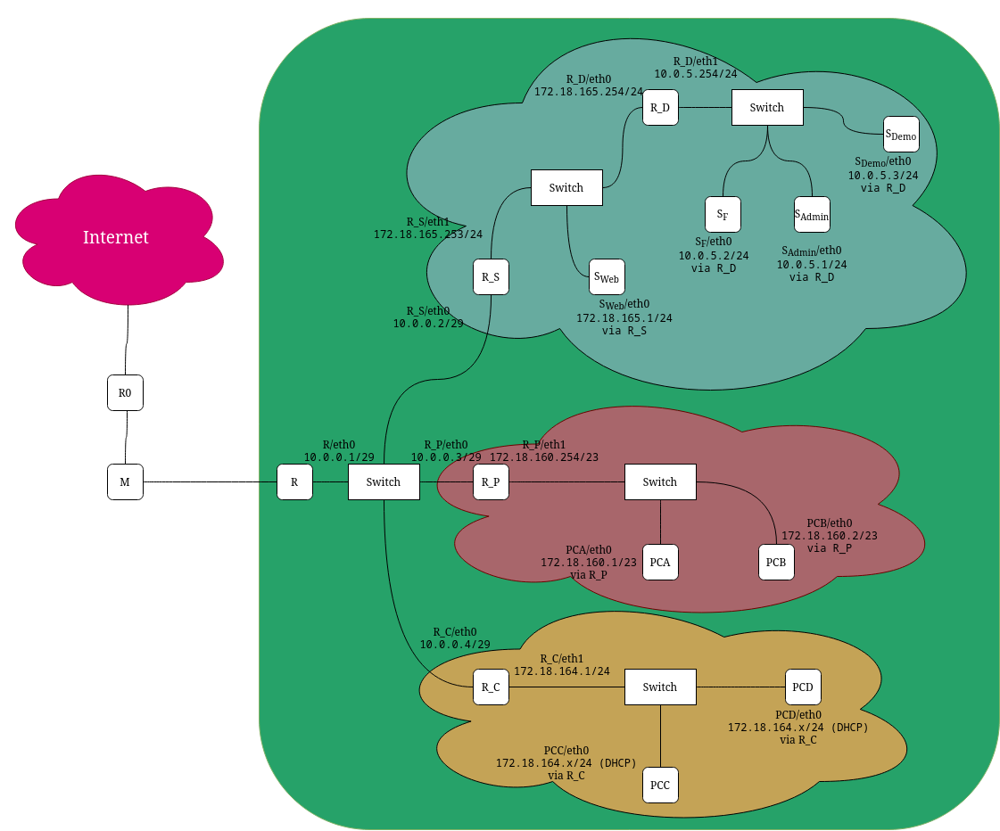

Ce projet consistait en la conception et le déploiement d'une infrastructure réseau virtualisée complète. L'objectif était de créer un environnement fonctionnel et sécurisé en segmentant le réseau et en déployant les services essentiels à son fonctionnement.
Mon rôle principal a été d'administrer et de configurer cette infrastructure de bout en bout :
L'audit de sécurité des flux a révélé un problème de connectivité lié au routage :
Difficulté : Afin de valider la sécurité des données échangées, je devais effectuer une capture de trames avec Wireshark depuis la machine hôte. Cependant, l'hôte physique n'avait aucun chemin réseau connu pour atteindre les sous-réseaux virtuels internes isolés.
Solution : J'ai mis en place du routage statique sur la machine hôte. J'ai ajouté une route spécifique indiquant que pour joindre le sous-réseau des serveurs sécurisés, le trafic devait passer par l'ordinateur configuré en "pont" (qui agissait alors comme passerelle/gateway). Cela a rétabli la connectivité de bout en bout pour l'analyse Wireshark.